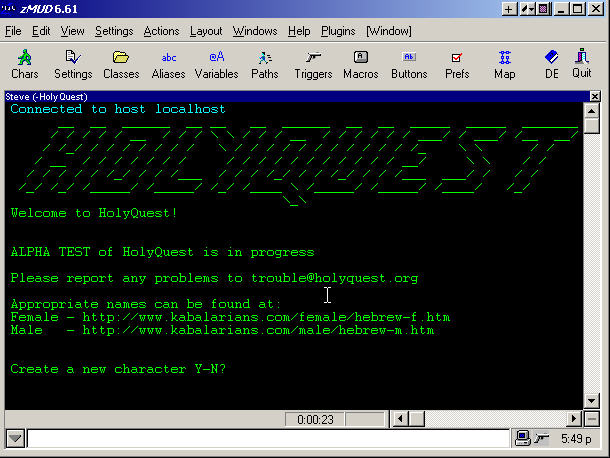

<html>
</html>
<head>
<title>HolyQuest - Getting Started</title>
<link rel="stylesheet" type="text/css" href="layout.css"/>
</head>
<body>

<div class="banner">


</div>

<div class="nav">

<a href="news.htm" class="link1">News</a></br>
<a href="history.htm" class="link2">History</a></br>
<a href="tutorial1.htm" class="link3">Tutorials</a></br>
<a href="rules.htm" class="link4">Rules</a></br>
<a href="glossary.htm" class="link5">Glossary</a></br>
<a href="faq.htm" class="link6">FAQ</a></br>
<a href="links.htm" class="link7">Links</a></br>
<a href="stats.htm" class="link8">Game Sats</a></br>
<a href="e-mail.htm" class="link9">E-Mail</a></br>
<a href="home.htm" class="link10">Home</a></br>
</div>

<div class="title">
<p>Getting Connected</p>
</div>

<div class="main">

<p class="pheader">
Connection Info
</p>

<p class="pbody">
Connect to: www.holyquest.org</br>
Port: 7373
</p>

<p class="pheader">
Using zMUD
</p>

<p class="pbody">
Before you can play HolyQuest you must have an internet connection and a 'telnet client' program. There are many telnet client programs available and a simple one can be found on most computers. One of the more popular telnet clients is zMUD by Zugg Software. You may download a trial zMUD from <a href="http://www.zuggsoft.com">www.zuggsoft.com</a>.
</p>

<p class="pbody">
When you start up zMUD look on the toolbar for a little green man with the word new under him. Click on the little green man and it will take you to the mudconector setup. You can scroll through the list on the left or you can type www.holyquest.org in the host textbox and 8080 in the port textbox. Then click connect on the toolbar, its the computer with the world behind it. A successful connection to HolyQuest, using zMUD, will look like this.
</p>



</br>

<p class="pbody">
Once you have logged into HolyQuest, zMUD will add HolyQuest to the list on the initial screen. When you are ready to play again you can just select it from that list. Well lets move on to creating a character.
</p>

</br>
<hr>
</br>

<p class="copyright">
Copyright &copy; 1999-2022 HolyQuest
</br>
All Rights Reserved.
</br>
</br>
</br>

</div>

</body>
</html>